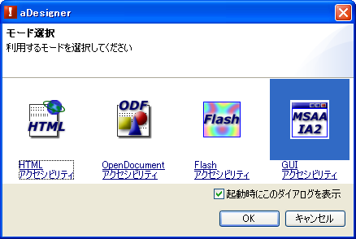
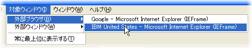
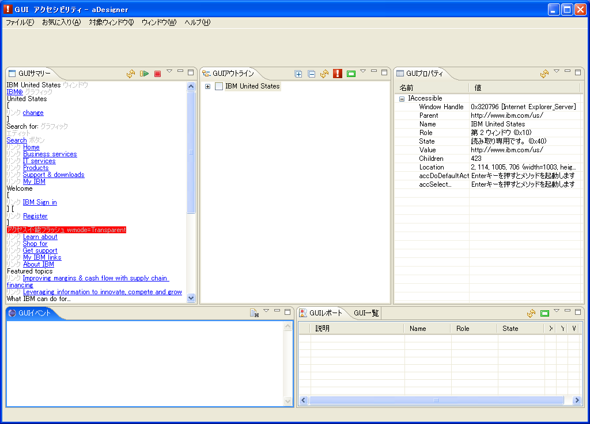
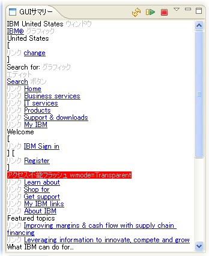
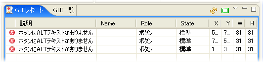
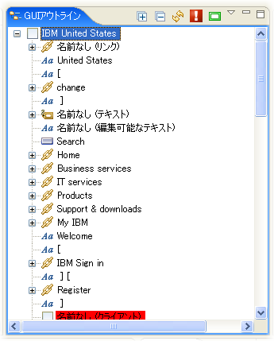
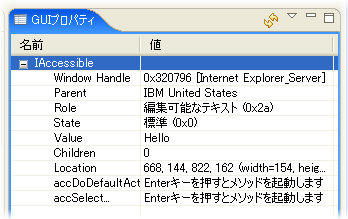
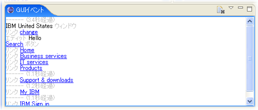
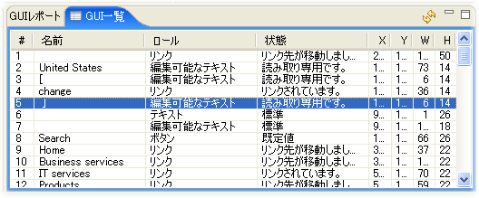

GUI アクセシビリティモードの構成
モード切替
メニューから 「ファイル」 > 「モード選択」 を選択し、「モード選択」 ダイアログを表示します。「GUI アクセシビリティ」 を選択して、「OK」 ボタンを選択します。

図1. モード選択ダイアログ
GUI アクセシビリティモードでは、対象ウィンドウメニュー、GUI サマリービュー、GUI アウトラインビュー、GUI プロパティビュー、GUI イベントビュー、GUIリポートビュー、GUI 一覧ビューが表示されます。
GUI アクセシビリティをチェックするためには、まず、どの Windows® アプリケーションのアクセシビリティをチェックするかを、メニューの 「対象ウィンドウ」 で指定します。
対象ウィンドウメニューには、以下の3種類のアプリケーションウィンドウが分類表示されます。アクセシビリティチェックを行う対象ウィンドウを、メニューから選択してください。
- (ブラウザビューのタイトル)
- aDesigner のブラウザビューで表示されているウェブページのタイトルが表示されます。選択するとブラウザビューの GUI アクセシビリティチェックを行います。
- 外部ブラウザ
- 外部のウェブブラウザ (Microsoft® Internet Explorer および Mozilla Firefox) の一覧がサブメニューに表示されます。選択したブラウザのウェブページの GUI アクセシビリティチェックを行います。
- 外部ウィンドウ
- その他の Windows® アプリケーションの一覧がサブメニューに表示されます。選択すると Windows® アプリケーション全体の GUI アクセシビリティチェックを行います。

図2. 対象ウィンドウメニュー
関連機能
- 常に最上位に表示する:
- aDesigner を外部アプリケーションより上位に表示します。
- 自動的に内部ブラウザを隠す:
- aDesigner のブラウザビューでウェブページが開かれている場合、外部アプリケーションチェック時に自動的にブラウザビューを隠し、画面を有効利用します。
対象ウィンドウを選択すると各ビューが自動的に更新されます。GUI サマリービューが表示されるまでしばらくお待ちください。

図3. GUI アクセシビリティモード
準備ができたら、以下のビューを使用してアプリケーションの GUI アクセシビリティをチェックすることができます。
GUI サマリービュー
GUI サマリービューは、アプリケーションに含まれるテキスト情報の一覧を表示します。このビューを利用すると、視覚障害者がスクリーンリーダで読み上げ可能な情報を一目で確認することができます。
さらに、読み上げ機能を利用することで、アプリケーションをスクリーンリーダで読み上げた場合の聞き取りやすさを耳で確認することが可能です。
(注: Microsoft® Speech API 5.0 対応の音声合成エンジンが必要です。)

図4. GUI サマリービュー
メニューの説明
 最新の状態に更新する (Shift+F10)
最新の状態に更新する (Shift+F10)- 表示内容を更新して最新の状態にします。
 全体を読み上げる (Shift+F10)
全体を読み上げる (Shift+F10)- 表示内容全体を読み上げます。
 読み上げを停止する (Shift+F10)
読み上げを停止する (Shift+F10)- 読み上げを停止します。
- 領域外項目を表示する (Ctrl+F10)
- 画面上に表示されていない内容も表示します。
- Flash 項目のみ表示する (Ctrl+F10)
- Flash アプリケーションの GUI アクセシビリティチェックを行います。
- 設定 (Ctrl+F10)
- GUI アクセシビリティ設定パネルを表示します。
- この行から読み上げを開始する (Shift+F10)
- 現在のカーソル行から読み上げを開始します。
GUI レポートビュー
アプリケーションのアクセシビリティ問題を自動的にチェックして、問題点を一覧表示します。
MSAA の各種プロパティをチェックすることにより、視覚障害者にとって必要な代替テキストが定義されているかどうかを調査し、必要に応じてエラー、警告または情報表示を行います。
自動チェック内容の詳細は、「GUI アクセシビリティモードで検出される問題点」 を参照してください。

図5. GUI レポートビュー
メニューの説明
- 最新の状態に更新する (Shift+F10)
- 表示内容を更新して最新の状態にします。
- レポートアイコンを画面上に表示する
- エラー箇所をアプリケーション画面上に重ね合わせて表示します。
- エラーレポートを表示する (Ctrl+F10)
- エラーを表示します。
- 警告レポートを表示する (Ctrl+F10)
- 警告を表示します。
- 情報レポートを表示する (Ctrl+F10)
- 情報を表示します。
GUI アウトラインビュー
GUI アウトラインビューは、アプリケーションが提供する MSAA オブジェクトをツリー形式で表示します。このビューを利用することで MSAA オブジェクトの構造を確認することができます。

図6. GUI アウトラインビュー
メニューの説明
 すべて展開する
すべて展開する- ツリー全体を展開表示します。すべて展開されるまでには時間がかかることがあります。
- すべて省略する
- 展開されているツリーをすべて省略表示します。
- 最新の状態に更新する (Shift+F10)
- 表示内容を更新して最新の状態にします。
- GUI レポートへジャンプする (Shift+F10)
- GUI アクセシビリティチェックを実行し、GUI レポートビューに移動します。
- アイコンを画面上に表示する
- 選択項目の兄弟子孫アイコンを、アプリケーション画面上に重ね合わせて表示します。
- 領域外項目を表示する (Ctrl+F10)
- 画面上に表示されていない内容も表示します。
- Flash 項目のみ表示する (Ctrl+F10)
- Flash アプリケーションの GUI アクセシビリティチェックを行います。
- この下をすべて展開する (Shift+F10)
- 選択しているオブジェクト全体を展開表示します。すべて展開されるまでには時間がかかることがあります。
GUI プロパティビュー
GUI プロパティビューは、GUI アウトラインで選択されているオブジェクトの詳細な情報を表示します。
また、このビューは MSAA (IAccessible) インターフェースの詳細情報に加えて IAccessible2 インターフェースの詳細情報を表示します。
アプリケーション開発者がこのビューを利用することで、アクセシビリティの問題点をより詳細に解析することができます。
GUI プロパティビューには以下の情報が表示されます。
- IAccessible
- MSAA インターフェースのプロパティが表示されます。
- IAccessible2
- オブジェクトが IAccessible2 インターフェースをサポートしている場合に、IAccessible2 インターフェースのプロパティが表示されます。また、以下の IAccessible2 関連インターフェースをサポートしている場合には、それぞれのインターフェースのプロパティが表示されます。
- IAccessibleAction
- IAccessibleApplication
- IAccessibleComponent
- IAccessibleEditableText
- IAccessibleHyperlink
- IAccessibleHypertext
- IAccessibleImage
- IAccessibleTable
- IAccessibleText
- IAccessibleValue

図7. GUI プロパティビュー
メニューの説明
- 最新の状態に更新する (Shift+F10)
- 表示内容を更新して最新の状態にします。
- nullプロパティを表示する (Ctrl+F10)
- 値が null のプロパティを表示します。
- 値の変化を色分け表示する(Ctrl+F10)
- 前回の表示と値が変化した場合、青色で表示します。
- コピー (Shift+F10)
- 選択行テキストをクリップボードにコピーします。
- メソッドを起動 (Shift+F10)
- 一部のメソッドを起動します。必要に応じてパラメータ入力ダイアログが表示されます。
GUI イベントビュー
GUI イベントビューは、アプリケーションから発生した MSAA/IAccessible2 イベントを表示します。
イベントメッセージ読み上げをオンにすると、オブジェクトのテキスト情報の音声読み上げを行います。イベントをスクリーンリーダで読み上げた場合の、聞き取りやすさを耳で確認することが可能です。
(注: Microsoft® Speech API 5.0 対応の音声合成エンジンが必要です。)

図7. GUI イベントビュー
メニューの説明
 クリア (Shift+F10)
クリア (Shift+F10)- イベントログを消去します。
- フィルター (Ctrl+F10)
- GUI イベントフィルター設定パネルを表示します。
- イベントメッセージを読み上げる (Ctrl+F10)
- イベントが発生したタイミングでオブジェクトのテキスト情報を読み上げます。
- 設定 (Ctrl+F10)
- GUI アクセシビリティ設定パネルを表示します。
GUI 一覧ビュー
GUI 一覧ビューは、GUI アウトラインビューで選択されたオブジェクトの兄弟オブジェクトをリスト表示します。

図8. GUI 一覧ビュー
メニューの説明
- 最新の状態に更新する (Shift+F10)
- 表示内容を更新して最新の状態にします。
インデックスに戻る
Microsoft, Windows, Windows NT および Windowsロゴは Microsoft Corporationの米国およびその他の国における商標。